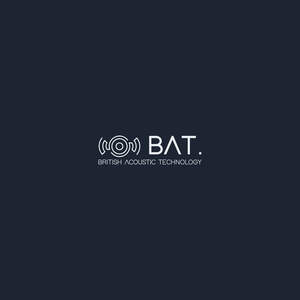
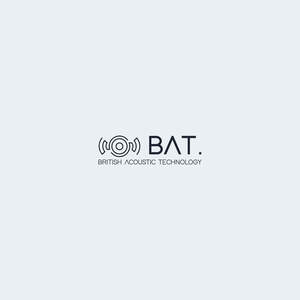

Trade Mark Journal No.2026/001 2 January 2026
UK00004300032 24 November 2025 (9,35,37,42)
Mark 1

Mark 2

- Class 9
- Speakers; Soundbar speakers; Audio speakers; Loud speakers; Wireless speakers; Speakers for computers; Portable speakers; Monitor speakers; Car speakers; Wireless audio speakers; Audio speakers for vehicles; Audio speakers for automobiles; Audio speakers for home; Audio speaker enclosures; Speakers [audio equipment]; Speaker enclosures; Smart speakers; Wearable speakers; Personal speakers; Wireless speaker microphones; Portable vibration speakers; Pairable wireless speakers; Signal processors for audio speakers; Speakers for record players; Speaker docks; Speakers for portable media players; Speaker switches; Audio speaker systems for vehicles; Speakers for video conferencing; Auxiliary speakers for mobile phones; Sub-woofers; Portable speaker docks; Mobile phone speakers; Loudspeakers; Speaker mounting brackets; Thin film speakers; Stereo headphones; Audio loudspeaker systems; Electronic audio signal processors for compensating sound distortion in speakers; Subwoofers; Tweeters; Woofers; Soundbars; Audio amplifiers; Loudspeaker cables; Stereo amplifiers; Public address speaker systems; Microphones; Loudspeakers with built in amplifiers; Headphone amplifiers; Horns for loudspeakers; Headphones; Audio adaptors; Stereos; Cases for loudspeakers; Loudspeaker installations; Integrated audio amplifiers; Audio frequency amplifiers; Sound projectors; Audio devices and radio receivers; Loudspeaker units; Hi-fi stereo systems; Microphone cables; Loudspeaker housings; Sound amplifiers; Racks for loudspeakers; Audio receivers; Audio cables; Studio monitor loudspeakers; Loudspeaker systems; Music headphones; Stereo receivers; In-ear headphones; Binaural microphones; Microphone mixers; Sound mixers with integrated amplifiers; Audio mixers; Microphone plugs; Audio recordings; Audio players; Adapter cables for headphones; Wireless headphones; Audio transmitters; Hi-fi sound systems; Two-way plugs for headphones; Audio expanders; Earphones; Speaking tubes; Subwoofers for vehicles; Electronic audio crossovers; Booms for microphones; Audio conference apparatus; Multi-room audio devices; Audio recorders; Keyboard amplifiers; Portable audio players; Microphones for communication devices; Stereo tuners; Headsets; Loudspeaker stands; Warning loud speaker apparatus for mounting on the roof of emergency services vehicles; Audio tapes featuring music; Cases for headphones; Surround sound systems; Earbuds; Diaphragms [acoustics]; Audio cable connectors; Audio equalizers; Sound amplifiers for musical instruments; Sound amplifying receivers; Automobile stereo adapters; Wireless audio and video receivers; Personal headphones for use with sound transmitting systems; Audio transmitter units; Sound reverberation units; Loudspeaker drive units; Speakerphones; Microphone buttons; Radio frequency amplifiers; Audio mixing desks; Desk or car mounted units incorporating a loudspeaker to allow a telephone handset to be used hands-free; Radio monitors for reproduction of sound and signals; Graphic decoders for use with audio karaoke systems; Sound recordings; Audio compressors; Audio cable; Electronic microphone splitters; Conference phones; Microphones [for telecommunication apparatus]; Microphones for telecommunication apparatus; Hands-free microphones for cell phones; Microphones for handheld electronic game apparatus; Headsets for telephones; Wireless headsets for cellphones; Wireless headsets; Ear pads for headphones; Telephone earpieces; Headsets for use with computers; Wireless headsets for smartphones; Megaphones; Instruments for recording sound; Instruments for the reduction of noise in systems for recording audio signals; Audio recording equipment; Amplifiers; Apparatus and instruments for recording sound; Amplifiers for musical instruments; Wireless headsets for tablet computers; Wireless headsets for smart phones; Personal headphones for sound transmitting apparatuses; Audio equipment; Audio interfaces; Audio digitisers; Audio apparatus; Audio and video receivers; Audio conferencing equipment; Digital audio recorders; Audio analyzers; Equalizers [audio apparatus]; Equalizers being audio apparatus; Audio effects apparatus; Equalisers [audio apparatus]; Digital audio servers; MPEG audio players; Computer hardware for signal processing of audio and video; Software for processing images, graphics, audio, video and text; Switchers for routing audio, video, and digital signals; Audio dubbing apparatus; Audio electronic apparatus; Audio mixing consoles; Wearable audio equipment; Control devices for car audio video navigation; Software to control and improve audio equipment sound quality; Power mixers [audio apparatus]; Signal amplifiers; Power amplifiers; Electrical amplifiers; Amplifiers for vehicles; Electronic amplifiers; Amplifier tuners; Acoustic transformers; Amplifying tubes.
- Class 35
- Sales promotion; Marketing; Product merchandising.
- Class 37
- Installation of audiovisual equipment.
- Class 42
- Design of software for audio and video operators; Development of software for audio and video operators; Design of hardware for audio and video operators.
BAT AUDIO LTD
Representative: awais ahmed